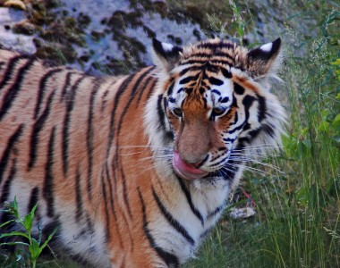
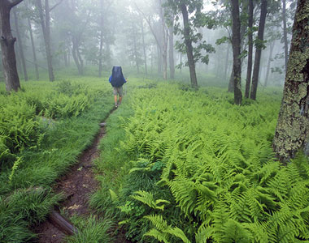
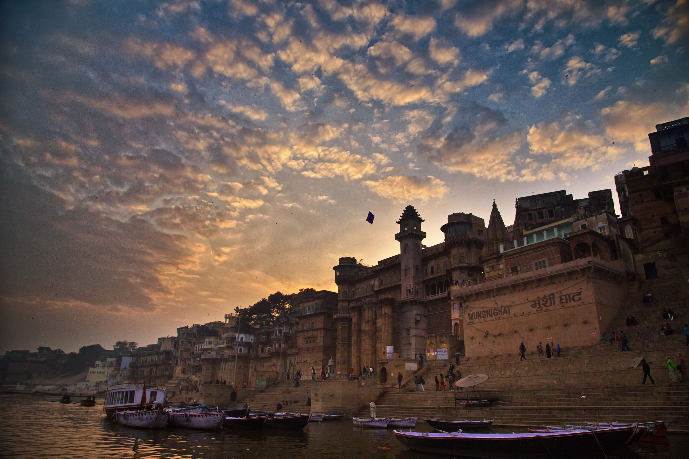
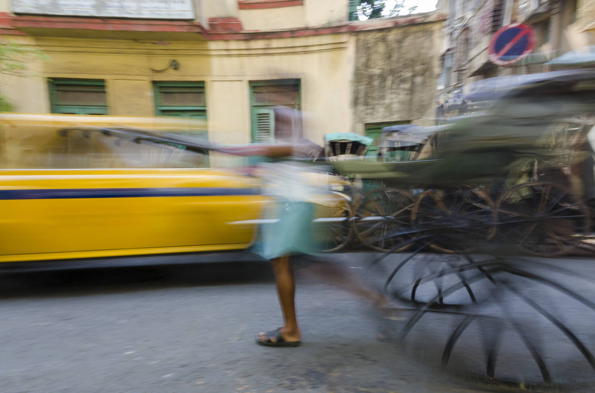
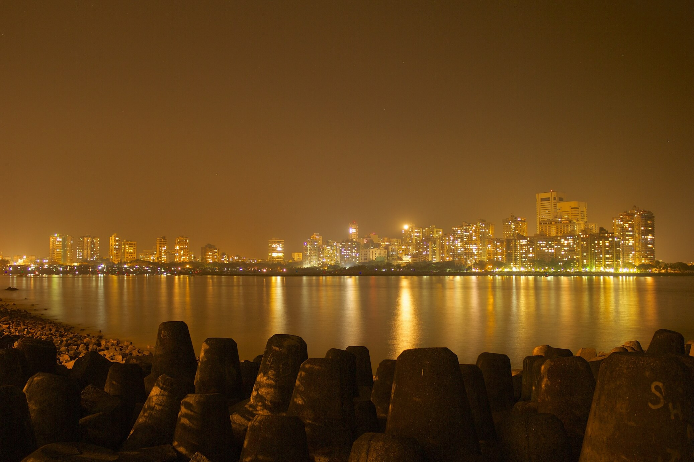
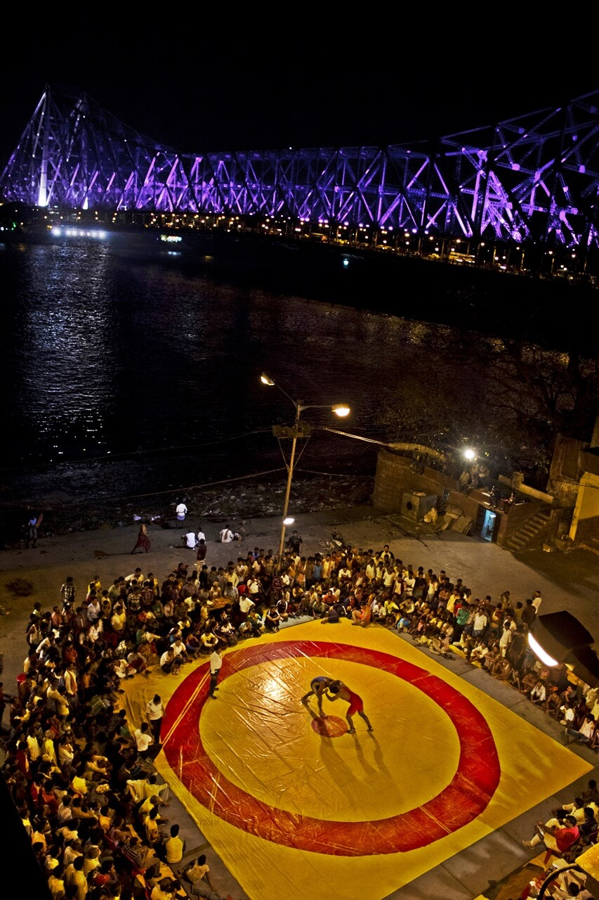
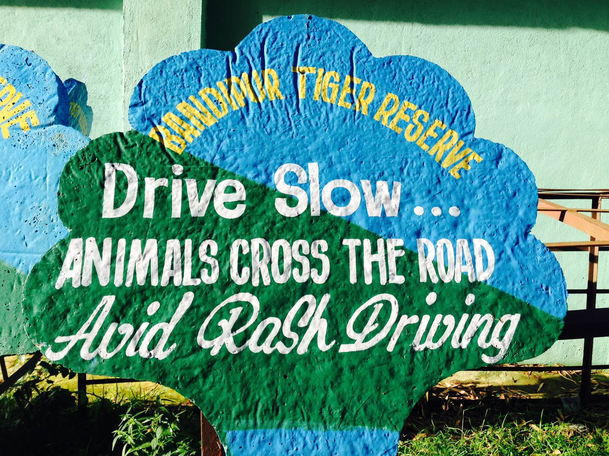
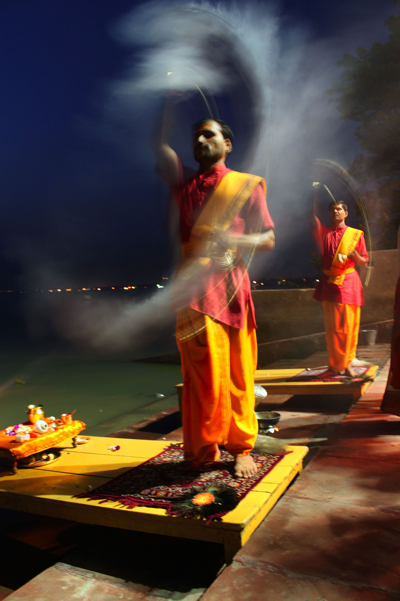
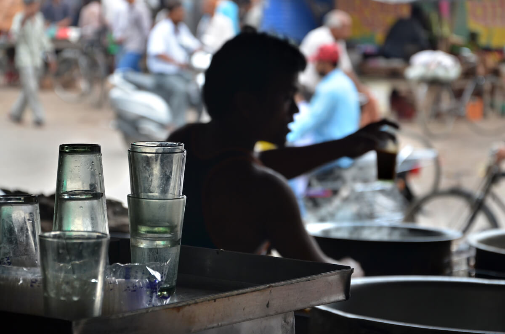
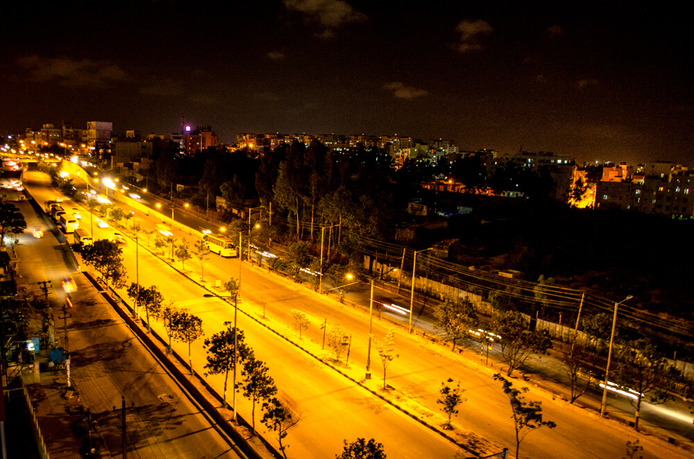

Toggle nav
Home
More Content
Sample
Sample
Sample
Sample
Search
Writers
Jane Doe
Bharath KKB
Savio
Kappa
Jane Doe
Jane Doe
Popular
Tiger is awesome.
Travel is luv
But travel is life

Staph and enjoy nature
Do you even nature brah?

For the lulz, so.
Recent
For the lulz, so.
Do you even nature brah?
But travel is life
Tiger is awesome.








Share
Share this Photostory
Share and let your friends explore the unexplored!
Close